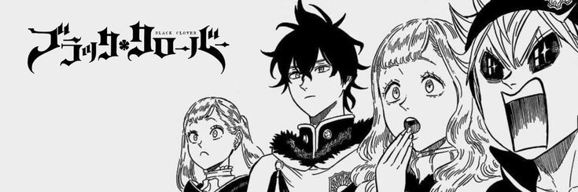

Black Clover: A Jornada de Dois Órfãos Rumo ao Topo do Mundo Mágico

| Eu vou ser o Rei Mago! - Asta
Sinopse
Black Clover é uma série de anime baseada no mangá escrito e ilustrado por Yūki Tabata.
Enredo: A história segue Asta e Yuno, dois órfãos criados juntos em uma igreja na periferia do Reino Clover.
Em um mundo onde a magia é tudo, Asta nasce sem nenhuma habilidade mágica, enquanto Yuno possui um talento excepcional.
Ambos competem para se tornar o próximo Rei Mago, o cavaleiro mágico mais poderoso do reino.
Personagens Principais
-
Asta: O protagonista principal, determinado e enérgico. Embora nascido sem magia, ele usa uma espada anti-mágica que pode anular feitiços.
-
Yuno: O rival e melhor amigo de Asta, extremamente talentoso com magia de vento.
-
Noelle Silva: Membro da nobreza e do esquadrão de Asta, os Touros Negros, que luta para controlar sua magia de água (H2O).
-
Capitão Yami Sukehiro: Líder dos Touros Negros, conhecido por seu comportamento rude e habilidades de magia negra.
Os Esquadrões Mágicos
Um esquadrão mágico é uma unidade de elite composta por cavaleiros mágicos que servem ao Reino Clover.
Esses esquadrões são responsáveis por proteger o reino, realizar missões de alta importância, combater ameaças mágicas e manter a ordem.
Cada esquadrão tem seu próprio capitão, que é um mago extremamente poderoso e respeitado.
- Touros Negros: Conhecido por aceitar membros problemáticos e fora do comum. Liderado por Yami Sukehiro.
- Águias Prateadas: Um esquadrão de elite composto principalmente por membros da nobreza.
- Leões Carmesins: Conhecido por sua bravura e força, liderado por Fuegoleon Vermillion.
- Pavões Azuis: Famoso por seu estilo de combate único e elegante.
Mundo e Magia
- Reino Clover: O principal cenário da série, dividido em quatro regiões principais: Norte, Sul, Leste e Oeste.
- Grimórios: Livros mágicos que contêm feitiços poderosos e são atribuídos aos magos em uma cerimônia especial aos 15 anos de idade.
- Tipos de Magia: Variam amplamente, incluindo elementos como fogo, água, vento e terra, além de formas mais raras como a anti-magia de Asta.
Arcos Principais (Em Ordem)
- Introdução: Asta e Yuno recebem seus grimórios e começam suas jornadas como cavaleiros mágicos.
- Invasão do Reino Clover: Diversas batalhas contra inimigos que ameaçam a paz do reino.
- Arco do Reino dos Elfos: Um arco significativo envolvendo a ressurreição de uma antiga raça de magos poderosos.
- Arco do Reino Spade: Introduz um novo reino inimigo e novas ameaças.
Recepção e Popularidade
- Audiência: Black Clover é popular tanto no Japão quanto internacionalmente, com uma base de fãs dedicada e viciada2.
- Merchandising: A série gerou uma ampla gama de produtos, incluindo brinquedos, roupas e jogos.
Adaptações e Mídia
- Mangá: Publicado na revista Weekly Shōnen Jump desde 2015
- Anime: Produzido pelo estúdio Pierrot, estreou em 2017 e continua em exibição.
- Filmes: Filmes animados adicionais e especiais baseados na série.
Esses são os aspectos principais de Black Clover, oferecendo uma visão geral clara e abrangente do anime.
"Minha
Magia
É
Nunca
Desistir!"
- Asta
Para mais informações..